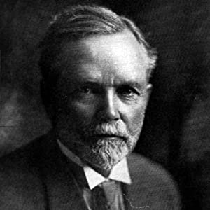

O Homem Mais Rico da Babilônia

A Babilônia histórica
Considerado o berço da civilização devido aos avanços políticos, econômicos e culturais, o Império Babilônico carecia de recursos naturais.
Toda a riqueza da cidade foi construída com a estratégia humana, e é nesse contexto que O homem mais rico da Babilônia é ambientado.
COMPRAR
Uma história sobre enriquecimento
Com mais de dois milhões de exemplares vendidos no mundo todo, O homem mais rico da Babilônia é um clássico sobre como multiplicar riqueza e solucionar problemas financeiros.
Baseando-se nos segredos de sucesso dos antigos babilônicos ― os habitantes da cidade mais rica e próspera de seu tempo ―, George S. Clason mostra soluções ao mesmo tempo
sábias e muito atuais para evitar a falta de dinheiro, como não desperdiçar recursos durante tempos de opulência, buscar conhecimento e informação em vez de apenas lucro,
assegurar uma renda para o futuro, manter a pontualidade no pagamento de dívidas e, sobretudo, cultivar as próprias aptidões, tornando-se cada vez mais habilidoso e consciente.
Sobre o autor

George Samuel Clason nasceu em 7 de novembro de 1874, em Luisiana, Missouri. O escritor frequentou a Universidade de Nebraska e foi fundador de duas empresas, a Clason Map Company of Denver
e a Colorado and the Clason Publishing Company. Com a última, ele publicou o primeiro atlas rodoviário dos Estados Unidos e do Canadá. Clason serviu ao Exército Americano durante a Guerra
Hispano-Americana e morreu em 1957 na cidade de Napa, na Califórnia.
Curiosidades
- O livro é baseado nas antigas práticas de sucesso dos babilônicos;
- A obra é uma coletânea de 11 parábolas e a primeira delas foi escrita em 1926;
- Na época, elas foram impressas como panfletos e distribuídas em bancos, companhias de seguros e para empregadores.
COMPRAR